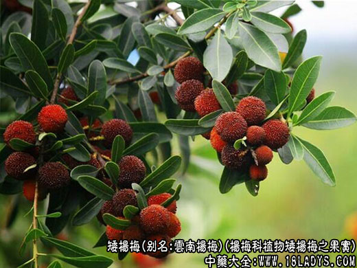

别名：云南杨梅、酸杨梅。
来源：杨梅科植物矮杨梅之果实。
形态特征：常绿灌木，高1～2m，小枝粗壮。叶革质或薄革质，叶片长椭圆状倒卵形至短楔状倒卵形，长2.5～8cm，宽1～3m。雄花序单生于叶腋，直立向上倾斜，雌花序单生于叶腋，雌花具2小苞片，核果球形，红色，直径1～1.5m。花期2～3月，果期6～7月。
性味功能：甘酸，凉。止渴生津、健脾益胃、收敛止泻。
功效与作用：热病口渴、食欲不振、胃酸缺乏、口腔溃疡、牙齿肿痛、痢疾。
药用部位：果实。
用法用量：9～15克，煎汤服(鲜品增量)或浸酒服。
方剂：矮杨梅(鲜)50g食下。用于牙龈肿痛、口腔溃疡。
药食源通：果酸甜，供食用，生食、制果酱、罐头。